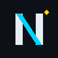

Neo ★ Agent
Neo Agent is a personal OAuth 2.0 desktop connector for Hermes Agent, an open-source AI assistant. It links the assistant to Google services (Gmail, Google Calendar, Google Drive, Google Sheets, Google Docs, and Contacts) for a single authorized user on that user's own machines.
How it works
The application runs locally on the owner's computer. Authorization happens through Google's OAuth consent screen. Access tokens and refresh tokens are stored only on the owner's machine and are never shared with third parties.
The application runs locally on the owner's computer. Authorization happens through Google's OAuth consent screen. Access tokens and refresh tokens are stored only on the owner's machine and are never shared with third parties.
Who uses it
This application is for personal use by the owner of this Google account. It is not distributed to other users and processes no data belonging to anyone else.
This application is for personal use by the owner of this Google account. It is not distributed to other users and processes no data belonging to anyone else.